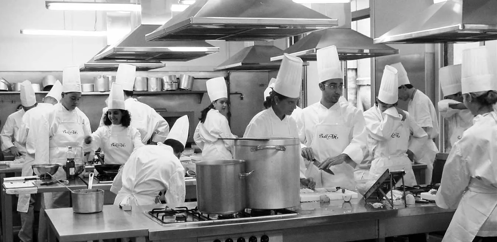
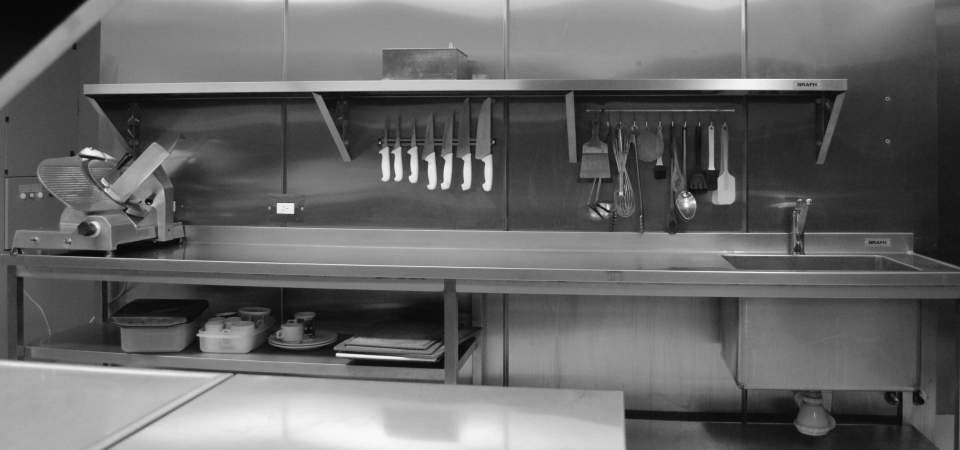

Sobre Nosotros
En Senza Glutine, somos más que una escuela: somos un sueño nacido de la necesidad auténtica de transformar el desafío de la celiaquía en una revolución culinaria. Fundada en 2015 por el chef Marco Rossi (cuya carrera en restaurantes Michelin se vio interrumpida por su diagnóstico de celiaquía) y la nutricionista Valeria Fernández (especialista en alergias alimentarias), nuestra historia comenzó en una humilde cocina comunitaria de Buenos Aires, donde organizaron el primer taller gratuito para familias afectadas por la dieta sin gluten. Aquel espacio, creado desde la frustración personal y la escasez de opciones seguras, pronto se convirtió en un movimiento: en 2018, tras ganar el premio "Innovación Gastronómica Inclusiva", inauguramos nuestra sede actual con laboratorios certificados GFCO (Gluten-Free Certification Organization) y cocinas diseñadas para evitar contaminación cruzada. Hoy, con 9 años de trayectoria, 120 cursos impartidos y más de 3.500 estudiantes graduados, seguimos fieles a aquella misión inicial: brindar un refugio seguro donde celíacos, padres de niños con alergias, chefs profesionales y curiosos gastronómicos puedan aprender que sin gluten no significa sin sabor, sin textura o sin creatividad. Lo hacemos porque creemos que las restricciones alimentarias no deben aislar, limitar sueños ni robar el placer de compartir la mesa; por eso, cada clase, cada receta y cada técnica que enseñamos (desde fermentaciones complejas hasta pastelería molecular GF) está imbuida de rigor científico, empatía y un compromiso inquebrantable: empoderarte para que tu cocina sea un territorio de libertad, donde los ingredientes alternativos se conviertan en obras de arte, las dudas en maestría y cada comida en una celebración de vida sin miedos.
El futuro de la cocina
Con el cierre de las escuelas culinarias tradicionales en todo el mundo, el aprendizaje en línea se está convirtiendo en el nuevo estándar de la industria para quienes buscan aprender técnicas culinarias fundamentales. Con videos de alta definición, instructores de primer nivel, apoyo entre compañeros y tareas interactivas, Senza Glutine ha marcado la pauta como el nuevo referente en educación culinaria desde 2005. Formamos a cientos de miles de cocineros en 180 países, y esto es solo el comienzo.

Mentalidad centrada en el estudiante
Con un equipo formado por expresidentes, directores de operaciones, administradores escolares e instructores principales de escuelas profesionales presenciales, en Rouxbe, servir a nuestros estudiantes es nuestra forma de vida. Nos centramos en ofrecerte la mejor formación disponible, completamente en línea. Ya seas cocinero casero, estudiante de cocina, chef profesional, nutricionista o cualquier otra profesión, tenemos algo para ti.